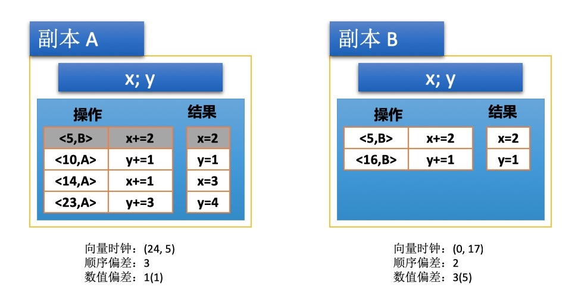

在分布式系统中，数据复制一般是为了增强系统的可用性或提高性能，但是数据一致性跟系统性能往往是矛盾的，对于数据复制的一致性问题没有最好的解决方法。除非放宽对一致性的要求才能获取特定场景下面的有效解决方法。那么放宽一致性的标准是什么？为此，Yu 和 Vahdat 提出了一种用于衡量不一致性以及表述系统中能够容忍哪些不一致性的模型：持续一致性。
什么是持续一致性
在上一篇文章《分布式系统：一致性模型》中可以发现，在数据复制的场景中，数据一致性跟系统性能是矛盾，对数据一致性的要求越高，系统的整体性能越低。对于数据复制的一致性问题没有最好的解决方法。目前实际应用的一致性模型大部分都是通过放宽一致性的要求来提升性能，例如因果一致性放弃了对无因果关系的事件的顺序的一致性，减少了一致性所要付出的代价。
日常生活中，一个人是否近视，近视多少度是有统一的标准可以依据的，否则医生没法做出判断。同样的，作为系统的设计者面对一致性问题的时候也需要有一个标准，在性能和一致性之间做出权衡，那么现在问题来了：衡量不一致性的标准是什么？
为了解决上面的问题，Yu 和 Vahdat 提出了一种用于衡量不一致性以及表述系统中能够容忍哪些不一致性的模型：持续一致性。
持续一致性定义了不一致性的三个独立坐标轴：数值偏差、顺序偏差、新旧偏差（不一致性的三个衡量标准），这些偏差构成了持续一致性的范围：
- 数值偏差限制了一个副本有多少未看到的其他副本写操作的权重（权重主要用于衡量不同写操作的重要性，当假设所有写操作权重相等时，权重即写操作的数量；当写操作的对象是数值时，可以用数值的差值作为权重），用于衡量当前副本值跟全局最终值之间的偏差。可以简单理解为未全局更新的写操作数量。例如在股票市场的价格记录的复制场景中，应用可以指定两个副本间的价格偏差不能超过 0.02 美元，这就是这个系统能够容忍的最大数值偏差。
- 顺序偏差限制了一个副本中暂存写操作的数量，用于衡量暂存的写操作在本地副本的顺序与最终提交的写操作全局最终顺序之间的差异。顺序偏差相对来说比较难理解，首先当允许副本间有差异的时候，那么必定有一个时刻副本会暂存一些写操作，这些写操作在全局提交之后才会成为永久更新，但是这些写操作不一定都能提交成功，它可能会回滚，这意味着副本暂存写操作的顺序跟最终提交的顺序不一定一致。然而暂存的写操作有哪些会回滚导致顺序不一致无法预测，因此为了方便起见，直接取暂存写操作的数量作为顺序偏差，因为这是顺序偏差的上限。这就是顺序偏差的计算规则的由来。举个例子，如果要计算两阶段分布式事务的顺序偏差，那么它的顺序偏差就是准备阶段写操作的数量。
- 新旧偏差限制了副本间同步写操作的延迟时间，即消息延迟。例如在天气预报的数据更新场景中，天气数据的更新不能超过 4 个小时的延迟，这段时间就是天气预报系统能够容忍的新旧偏差。
上面的概念比较难理解，下面举一个简单的例子进行分析。
一致性的衡量标准
一致性单元
在解释不一致性的偏差之前，需要定义一下什么是非一致性。首先，Yu 和 Vahdat 引入一致性单元的概念，一致性单元表示的是在一致性模型中度量的数据单元。例如单个股票的价格可以定义为一个一致性单元，也可以把多个股票的价格作为一个一致性单元，这取决于应用场景。
对于每个一致性单元，持续一致性可以用三维向量定义为：一致性 = (数值偏差，顺序偏差，新旧偏差)。当所有偏差都为 0 时，就达到了线性一致性的要求。
在给出一致性单元的定义之后，下面对一致性的偏差给出更具体的定义。
- 数值偏差表示对于一个副本（一致性单元） R，有多少其他副本的更新没有应用到 R 上，并且这些更新的影响是什么。
- 顺序偏差表示对于一个副本（一致性单元） R，R 有多少暂存的更新操作
- 新旧偏差表示对于一个副本（一致性单元） R，R 有多长时间没有更新数据
一致性衡量的例子

- 标为灰色的操作表示已提交的更新，白色的操作为未提交的更新
- <5,B> 表示对数据 B 执行操作时的向量时钟的值为 5，可简单理解为数据版本
- 数值偏差定义为 n(w)
- n = 副本 R 未看到的其他副本的更新数量
- w = 偏差的权重 = 副本 R 一致性单元中所有变量当前值与全局值的数值差值
在上面的示例中，可以看到两个副本上有包含 x，y 的一致性单元上。这两个变量的初始值都为 0。注意，由于副本 A 最后的操作是 <23, A>，所以它的向量时钟为 (24, 5)。（参考向量时钟）
首先来分析顺序偏差，副本 A 从副本 B 接受了 x+=2 的操作，并且提交为永久更新，注意此时副本 B 的 x+=2 的操作并未提交。副本 A 有三个暂存的写操作：<10, A>、<14, A>、<23, A>，所以此时它的顺序偏差为 3。而副本 B 有两个暂存的写操作，所以它的顺序偏差为 2。
接下来分析一下数值偏差，副本 A 还没有看到来自副本 B 的操作是 <16, B>，因此其数值偏差为 1，而权重的计算会稍微难理解一点，首先在这个例子中，由于一致性单元的变量是数值对象，所以这里权重可以定义为数值的差。在当前的图示状态中，假设所有值都会被提交为永久更新，一致性单元的最终值为：x=3，y=5，而此时副本 A 的值为：x=3，y=4，副本 A 的数值偏差权重为：(3+5)-(3+4)=1。同理，副本 B 还没有看到来自副本 A 的操作有：<10, A>、<14, A>、<23, A>，因此其数值偏差为 3，副本 B 的值为：x=2，y=1，其数值偏差权重为 (3+5)-(2+1)=5。综上，数值偏差的计算比较直观，就是副本的当前未看到其他副本的更新数量，而权重相对比较难理解，它反映的是当前副本一致性单元的快照跟全局快照的数值差值。值得注意的是，权重的计算跟数据的类型息息相关，主要取决于系统中对于数据更新权重的定义，像数值类型就可以用差值来衡量，像字符类型就没法用这种方式来计算，一种可行的方案就是认为权重都相等，此时权重就等于写操作的数量。
最后分析一下新旧偏差，上面的例子中没有体现出新旧偏差，但是前面已经举了天气预报的例子。实际上新旧偏差是相对好理解的，在分布式系统中消息传递是有延迟的，而这个延迟的时间就是我们所说的新旧偏差。有那么一段时间对 X 的数据在副本间是不一致的，因为数据传输过程中有延迟，所以新旧偏差在除了线性一致性模型之外一致性模型都是存在的。
通过上面的分析可以发现，限制顺序偏差可以通过控制单个副本的暂存更新数量完成，但是要限制数值偏差和新旧偏差则需要依赖所有副本的协调。
总结
持续一致性模型给出了一种用于衡量不一致性以及表述系统中能够容忍哪些不一致性的标准，包括顺序偏差、数值偏差、新旧偏差。持续一致性就像是一把尺子，给出了度量分布式系统中不一致性的标准和方法。它的最大特点是从副本的视角出发给出了一致性衡量的方法，而不是笼统从整个系统去讨论一致性，具有更强的可操作性。